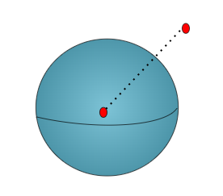
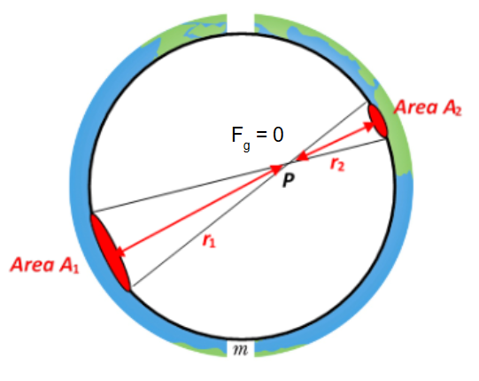

The Shell Theorem, formulated by Isaac Newton, describes how spherical mass distributions affect the gravitational field. It is particularly important in understanding gravitational interactions inside and outside uniform spheres like planets and stars.
If a point mass \( m \) is located a distance \( r \) from the center of a uniform spherical shell (or solid sphere) of mass \( M \), and \( r \geq R \) (outside the shell), then:
This is identical to the force from a point mass located at the center of the sphere.
If the point mass is located inside a uniform spherical shell (i.e., \( r < R \)), the shell’s gravitational pull cancels out symmetrically in all directions:
Thus, the shell exerts no net gravitational force on the object inside it.
Summary:
The Shell Theorem is essential for simplifying gravitational calculations involving spheres and helps explain many real-world and astronomical phenomena with elegant precision.